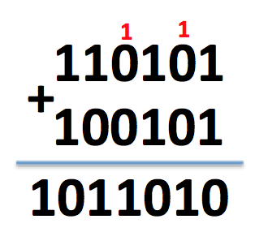
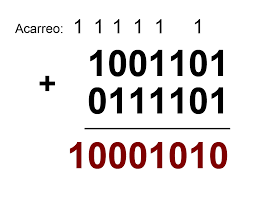
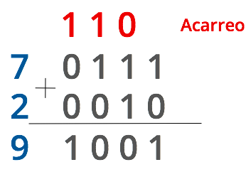
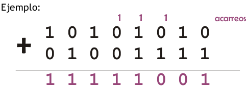

Vamos a revisar los siguientes ejemplos. Sumar los siguientes números:
En este ejemplo en color rojo se muestra el acarreo que se tiene.

En este ejemplo al igual que en el anterior se muestra el acarreo que se tiene.

En este ejemplo se muestra a la izquierda el número decimal y a la derecha el número binario:

Este último ejemplo es un número más alto pero como se ve el proceso es el mismo:

Finalmente se sugiere resolver las siguientes sumas y verificar el resultado:
Realiza las siguientes sumas de números binarios:
a. 111011 + 110
b. 111110111 + 111001
c. 10111 + 11011
Resultados
a. 1000001
b. 1000110000
c. 110010